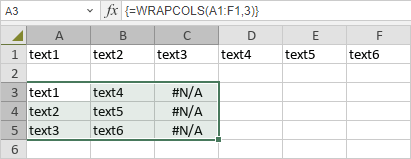

WRAPCOLS funkcija
Funkcija WRAPCOLS je jedna od funkcija za pretragu i reference. Koristi se za raspoređivanje vektora reda ili kolone po kolonama nakon određenog broja vrednosti.
Sintaksa
WRAPCOLS(vector, wrap_count, [pad_with])
WRAPCOLS funkcija ima sledeće argumente:
| Argument | Opis |
|---|---|
| vector | Koristi se za određivanje vektora ili reference koja se raspoređuje. |
| wrap_count | Koristi se za određivanje maksimalnog broja vrednosti po koloni. |
| pad_with | Koristi se za određivanje vrednosti kojom će se popunjavati. Podrazumevano je #N/A. |
Napomene
Napomena: ovo je formula niza. Za više informacija, pročitajte članak Umetanje formula niza.
Kako primeniti WRAPCOLS funkciju.
Primeri
Na slici ispod prikazan je rezultat koji vraća WRAPCOLS funkcija. Ona raspoređuje red u opsegu A1:F1 u niz u opsegu A3:C5 po kolonama.
